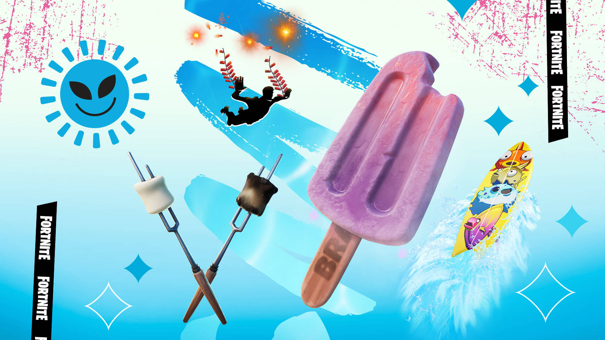
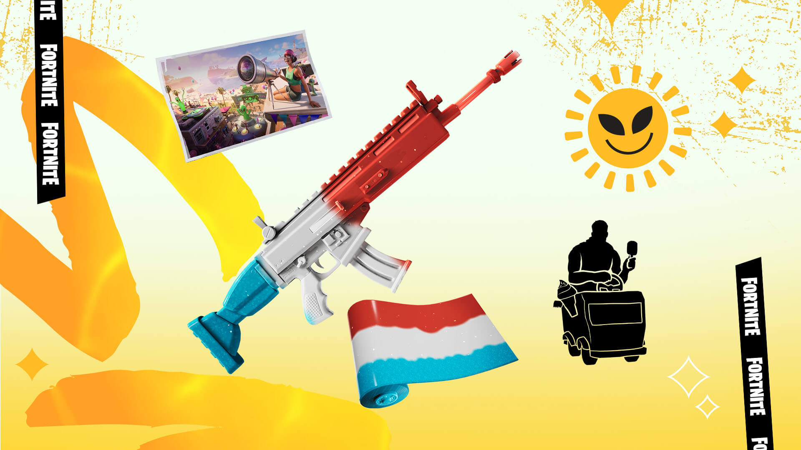
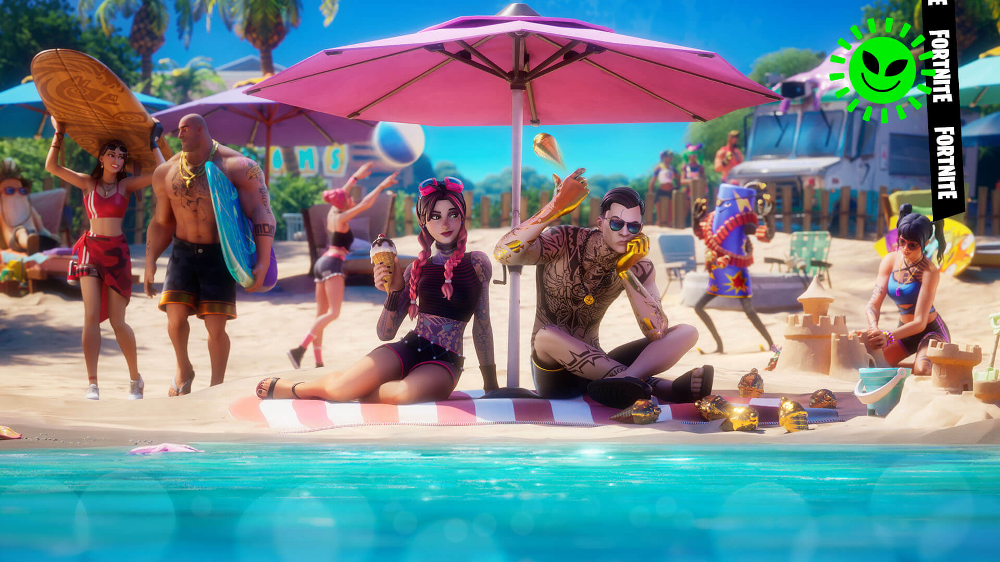
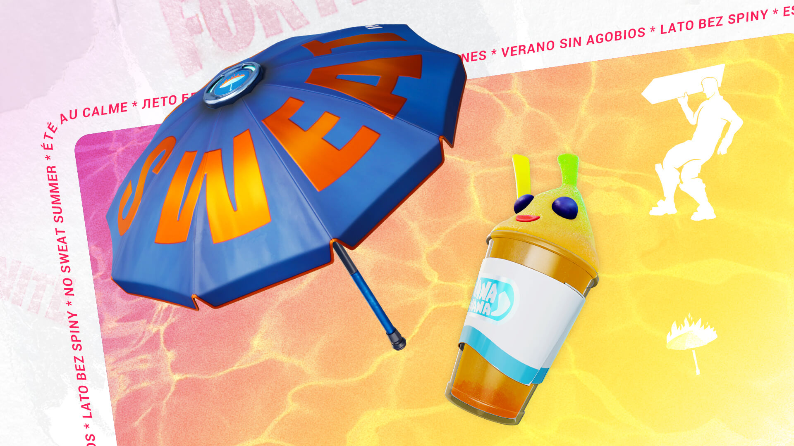
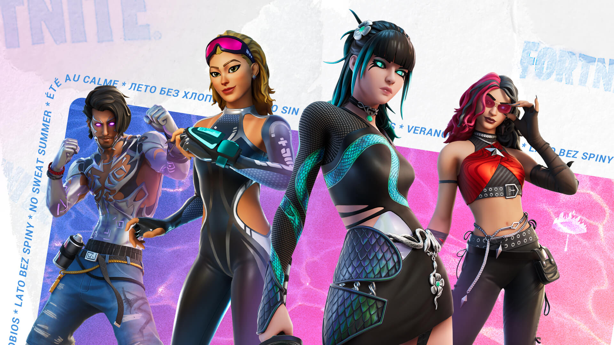
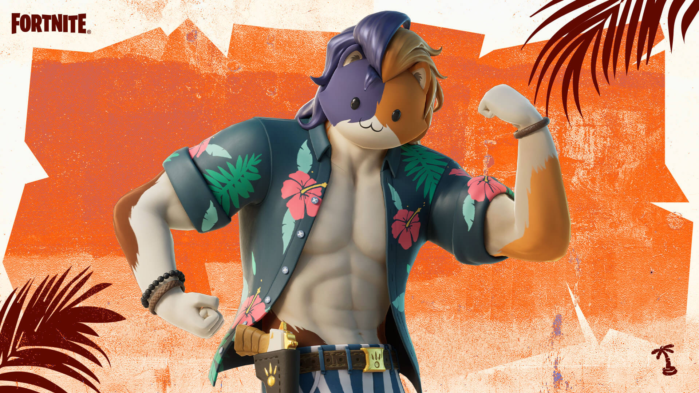
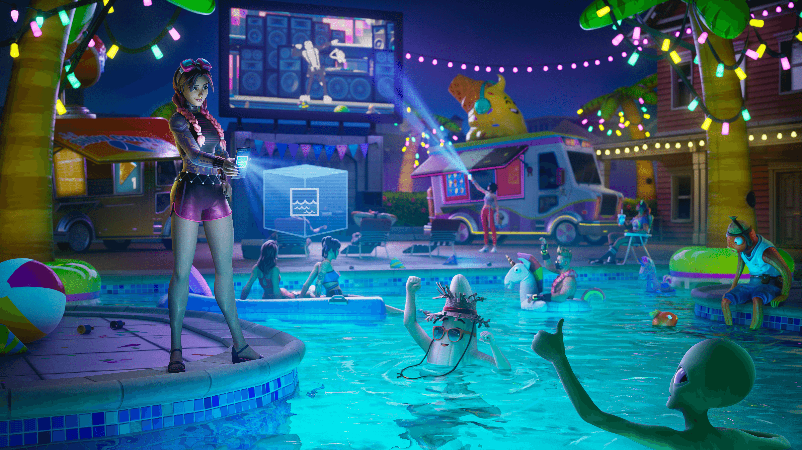

FORTNTE: СУПЕРГЕРОЙСКОЕ ЛЕТО: ПРИГОТОВЬТЕСЬ К
ПЛЯЖНОМУ СЕЗОНУ С НОВЫМИ НАГРАДАМИ И
МНОГИМ ДРУГИМ!
Да, в небе висит огромный флагман. Но это не повод отменять веселье под солнцем. Космическое лето начинается!
Фанаты супергероев устроили им приветственную вечеринку, которая продлится до 27 июля 2022 года, 06:59 по московскому времени. Присоединитесь к этому межпланетному празднику: играйте в полюбившиеся временные творческие режимы, получайте летние награды и принарядитесь к пляжному сезону, чередуя новые и вернувшиеся экипировки. Кроме того, на остров недавно впервые прибыли и суперзлодеи…(Узнайте самые актуальные разведданные на радиошоу: «Супер: герой или враг ?».)
Временные творческие режимы, задания и пляжные награды
На время Космического лета в игру вернулись популярные творческие режимы: «Zone wars трио 1.0 от bio — пользовательские команды», «Сто баллов», «Опасный полёт — воздушный бой» и «Яма — все против всех». Проходите задания в этих режимах (или на самих островах), чтобы получить награды, которые подойдут для любой пляжной вечеринки. Откройте замороженное украшение на спину «Фруктовый лёд» и каждый его вкус, дельтаплан «Лама-сёрф» для сёрфинга и разные стили для него, а также многое другое!
Хотите больше наград? Выполните два задания «Космическое лето», чтобы любоваться пейзажами Пляжа Прибытия на его экране загрузки. Игроки, которые выполнят шесть заданий, откроют пёструю обёртку «Мороженое» и смогут украсить ей своё снаряжение. Если же вы выполните двенадцать заданий, то получите эмоцию «Мороженщик». Наполните лето вкусом сладостей! Все временные творческие режимы (и их задания) будут постепенно открываться в течение Космического лета и останутся доступными вплоть до его окончания.
Все временные творческие режимы (и их задания) будут постепенно открываться в течение Космического лета и останутся доступными вплоть до его окончания.
Принарядитесь с новыми и знакомыми экипировками
Во время события «Супергеройское лето» вы встретите новые экипировки и комплекты с пляжными версиями знаменитых героев острова. Прогуляйтесь на свежем воздухе с Летним Мидасом, охраняйте пляж в роли Пляжника Здоровяка, искупайтесь с Летней Кристалл или посвятите отдых исследованиям в компании Пляжной Джулс.
Кроме того, на этом празднике лета будут и вернувшиеся экипировки вроде Летнего Ронина или Пляжного Банана.
Задания «Лето без хлопот»
Присоединившись к команде рекламщиков агентства «Не парься!», вы будете отвечать за его спонсорские задания, маркетинговые задания и… э-э… задания третьего тип
СПОНСОРСКИЕ ЗАДАНИЯ АГЕНТСТВА «НЕ ПАРЬСЯ!»
Будут постепенно открываться в период с 7 по 27 июля.
Вам придётся слегка запариться, чтобы принести пользу агентству «Не парься!». Для выполнения спонсорских заданий агентства «Не парься!» вам придётся носить табличку «Не парься!», но других физических усилий от вас не потребуют. Вам также предстоит пройти круг на трассе для гонок на катерах и заставить других игроков танцевать. Вот так работают в агентстве «Не парься!»
Награды за спонсорские задания агентства «Не парься!»:
- • Опыт
- • украшение на спину «Ледяной десерт»
- • украшение на спину «Ледяной десерт (Шоко-Мяускул)»
МАРКЕТИНГОВЫЕ ЗАДАНИЯ АГЕНТСТВА «НЕ ПАРЬСЯ!»
Будут постепенно открываться в период с 27 по 31 июля.
Когда станут доступны все спонсорские задания агентства «Не парься!», настанет очередь маркетинговых заданий. Вам наверняка казалось, что маркетологи целый день сидят в офисе, но в этом агентстве они активно шевелят ногами. Выполняя эти задания, вы будете танцевать (нельзя же, чтобы люди делали за вас ВСЮ работу), торговать вразнос, устраивать трюки на катерах и «раздавать» сладкие угощения. Чтобы снять с себя ответственность, агентство «Не парься!» заказало угощения у третьих лиц. Ну, вы поняли.
Награды за маркетинговые задания агентства «Не парься!»:
- • Опыт
- • украшение на спину «Ледяной десерт (клубничный Карась)»
ЗАДАНИЯ ПО ОТЗЫВУ ПРОДУКЦИИ АГЕНТСТВА «НЕ ПАРЬСЯ!»
Будут постепенно открываться в период с 28 июля по 3 августа.
Как ни грустно, этого никак не избежать, посему…
Награды за задания по отзыву продукции агентства «Не парься!»:
- • Опыт
- • украшение на спину «Ледяной десерт (Попрыгун с посыпкой)»
- • Музыка лобби «Не парься!»
К счастью для вас, в агентстве «Не парься!» поощряют трудолюбивых сотрудников. Выполнив три задания агентства «Не парься!», вы получите украшение на спину «Ледяной десерт» в стиле «Морозный Банан». За семь выполненных заданий вы получите дельтаплан «Зонт без забот». А за 14 выполненных заданий вы получите эмоцию «Крутись и не парься!» для любителей крутить табличками.
Все задания «Лето без хлопот» будут доступны до 9 августа, 16:00 по московскому времени.
Награды отряда FORTNITE
Ваши вкусовые рецепторы устали от обилия разных вкусов «Ледяного десерта»? Придётся нагрузить их ещё сильнее! Действующие участники «отряда Fortnite» автоматически получат украшение на спину в стиле «Вишнёвая Обнимашка» при входе в игру во время события «Лето без хлопот» (в дополнение к стандартному стилю).
Новые летние экипировки
Лето — идеальная пора для вечеринок, сёрфинга, плавания и… уничтожения демонов? Оденьтесь по-летнему, выбрав новые экипировки, которые появятся с началом события «Лето без хлопот». Вас ждут Драгоценная Шарлотта, Дерзкая Кора, Модный Разиэль, крутой пловец Мэдли и множество других! Дерзкая Кора и Модный Разиэль входят в набор «Воители променада», который появится 22 июля, в 03:00 по московскому времени и включает в себя ещё одну новую экипировку. Кроме того, вернутся популярные летние экипировки прошлых лет. Не пропустите!
Знойный залив
Главная тусовка пройдёт в Знойном заливе. Это праздничное место закроется, когда закончится летнее приключение, так что не опаздывайте!
Освежитесь в жару вкусным мороженым
Нагуляли аппетит? На время летнего приключения в игре вновь появятся сезонные предметы вроде
Приготовьтесь отпраздновать лето: на время летнего приключения вместо сигнального в игре появится салютный пистолет.
Задания «Летние каникулы»
Наслаждайтесь атмосферой лета и получайте награды за задания «Летний зной», «Знойная вечеринка» и «Эффектное появление».
ЗАДАНИЯ «ЛЕТНИЙ ЗНОЙ»
Будут постепенно открываться с 4 по 7 июля.
Кто же откажется летом от освежающего напитка? Точно не Тропический Мяускул! Попробуйте себя в роли бармена и приготовьте тропический коктейль, который он будет потягивать, лёжа на солнышке.
Награды за задания «Летний зной»:
- • Опыт
- • Обёртка «Дикие бананы»
ЗАДАНИЯ «ЗНОЙНАЯ ВЕЧЕРИНКА»
Будут постепенно открываться с 8 по 11 июля.
Что за тусовка без вкусняшек? Подберите идеальное блюдо для пикника и станьте звездой острова.
Награды за задания «Летний зной»:
- • Опыт
- • Украшение на спину «Геккон»
ЗАДАНИЯ «ЭФФЕКТНОЕ ПОЯВЛЕНИЕ»
Будут постепенно открываться с 12 по 16 июля.
Можно подъехать на тусовку, как все, а можно сделать это стильно. Ваше эффектное появление запомнят надолго!
Награды за задания «Летний зной»:
- • Опыт
- • Воздушный след «Цветущие лианы»
Выполняйте отдельные задания «Летних каникул» и получайте опыт. За выполнение определённого количества заданий вы откроете новые предметы для вашего шкафчика:
- • 14 заданий — украшение на спину «Боевые пальмы»
- • 14 заданий — украшение на спину «Боевые пальмы»
- • 24 задания — эмоция «Кокосовый перекус» и экран загрузки «Прыжок в водопад»

За выполнение следующих заданий «Летних каникул» вы откроете ещё больше предметов для вашего шкафчика:
- • Уничтожьте 10 камней — кирка «Ударный артефакт» (задание доступно с 11 июля, 16:00 МСК)
- • Вломитесь в дверь, а затем в течение 30 сек. взберитесь на возвышенность — обёртка «Звёздное побережье» (задание доступно с 12 июля, 16:00 МСК)

Еще одно преимущество для подписчиков «Отряд FORTNITE»
Все подписчики «отряда Fortnite», вошедшие в Fortnite в дни летних приключений (с 4 июля, 16:00 по московскому времени, до 18 июля, 16:00 по московскому времени), получат бонус — украшение на спину «Плюшевый банан», созданное в стиле по мотивам эскиза нашего автора D3nni. У «Плюшевого банана» есть дополнительный, тропический стиль.
Все активные подписчики «Отряда Fortnite» получат украшение на спину «Плюшевый банан» сразу после входа в игру во время летнего приключения.
Еще больше экипировок!
Что за тусовка без гостей? На время летних приключений в магазине предметов появятся новые и хорошо знакомые экипировки вроде Опал и Подводного агента:
Кстати о летнем стиле: экипировку Тропического Мяускула можно будет получить в боевом пропуске третьего сезона четвёртой главы «Королевской битвы», начиная с 6 июля, 16:00 по московскому времени! Тропического Мяускула можно будет открыть до конца третьего сезона четвёртой главы.
С друзьями веселее!
Проводить летние каникулы с друзьями вдвойне приятнее, не так ли ? Команда Fortnite устраивает конкурс: "Лучший летний отдых!". Все что от вас требуется: загрузить фото или видео вашего летнего отдыха с друзьями в соц.сети с хештегом: #FORTNITESUPERHEROSUMMERFEST2025 и отменить наш аккаунт в этой соц.сети. Мы же, в свою очередь, выберем 10 победителей, чей отдых нам покажется более захватывающим, и выдадим им УНИКАЛЬНЫЕ экипировки, приуроченные к событию Fortnite Superhero Summer!
Где бы вы ни находились — присоединяйтесь к «Летним каникулам» вместе со всеми жителями Земли и гостями из Супервселенной! Отработав смену в агентстве «Не парься!», отправляйтесь всем отрядом на отдых в Убежище! Зажигайте, купайтесь и ешьте мороженное! 🍦☀️
#FORTNITESUPERHEROSUMMERFEST2025
Об игре
Создавайте, играйте и сражайтесь с друзьями бесплатно в Fortnite. Станьте последним выжившим в «Королевской битве» или «Нулевой высоте», отбивайтесь от полчищ монстров с тремя друзьями в «Сражении с Бурей», постройте свою жизнь «Brick life» или свой мир в «Odyssey», изучайте что-то новое в «Expeditions», станьте лучшей командой в «Линии огня», гоняйтесь в «Rocket Racing», посещайте фестивали в «Fortnite Festival», концерты и мероприятия или играйте в миллионы авторских игр, среди которых вы найдёте гонки, полосы для паркура, игры на выживание с зомби и не только. Каждый остров в Fortnite имеет собственный возрастной рейтинг, поэтому вы всегда сможете легко найти то, что подойдёт вам и вашим друзьям. Всё это ждёт вас в Fortnite… Присоединяйтесь!